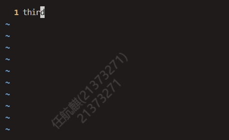

Lab0实验报告
思考题
Thinking 0.1
首先陈述结论，执行cat Modified.txt的结果和第一次执行add命令之前的status不一样:
执行Untracked:
执行Modified:
在第一次执行add命令之前，README.txt刚刚被创建，我们并没有输入任何有关于它的git指令，因而它处于未跟踪状态。所以它会出现在未跟踪的文件一栏。
在经历过对其进行的种种操作后，README.txt处于已经被跟踪但修改还未暂存的阶段，所以它会出现在尚未暂存以备提交的变更一栏。
Thinking 0.2
Add The File: git add 文件名
Stage The File:git add 文件名
commit:git commit -m “message”
Thinking 0.3
1.代码文件 print.c 被错误删除时，应当使用什么命令将其恢复？
答：使用git checkout — print.c
2.代码文件 print.c 被错误删除后，执行了 git rm print.c 命令，此时应当使用什么命令将其恢复？
答：使用 git reset HEAD print.c 和 git checkout — print.c
3.无关文件 hello.txt 已经被添加到暂存区时，如何在不删除此文件的前提下将其移出暂存区？
答：git rm —cached hello.txt
Thinking 0.4
1.提交三次后，提交说明为3的哈希值和提交日志如下：

2.执行git reset —hard HEAD^后提交日志如下：
会发现第三次提交的提交日志消失了，这是由于目前处于第二次提交的版本阶段。
3.执行git reset —hard hash 回到第一次提交的版本，这里的哈希值为第一次提交的哈希值，提交日志如下：
会发现提交日志只剩下了第一次提交，这是由于目前处于第一次提交的版本阶段。
4.执行git reset —hard hash 回到最新的版本，这里的哈希值为之前记录下的提交说明为3的哈希值。提交日志如下：
会发现提交日志回到和最初的样子。这是由于目前处于最新提交的版本阶段。
Thinking 0.5
1.执行echo first 效果如下：
first直接输出在了shell上。
2.执行echo second > output.txt效果如下：

使用vim output.txt打开文件发现,second被重定向输出到了output.txt中
3.执行echo third > output.txt效果如下：

使用vim output.txt打开文件发现，third被重定向输出到了output.txt中，之前的second不见了，这是由于使用“>”输出内容会直接重写文件。
4.执行echo forth >> output.txt效果如下：
使用vim output.txt打开文件发现，forth被重定向输出到了output.txt中，之前的third仍然存在，这是由于使用“>>”输出内容会将内容追加到文件末尾。
Thinking 0.6
command文件内容如下：
采用脚本创建test文件
result文件内容如下：
test文件内容如下：
解释说明：
command生成了用来生成result文件的命令序列test
test生成了result文件
将test作为批处理文件后，test成为了一个shell脚本，其内容会按shell语法被系统所理解，其中定义了三个变量，a,b的值均直接赋值，分别为1，2，c的值由a,b加和得到。echo后面跟着指令，且没有用’’包裹时，会展开命令并运行。所以之后执行了$c>file1,$b>file2,$a>file3指令，将a,b,c的值分别保存在了file1,file2,file3中，之后又用cat指令取出这三个文件的内容，即a,b,c的值，追加到了result的末尾。最终得到了result文件。
效果区别
使用单引号时(‘’)时，将保留引号中包含的每个字符的字面值。变量和命令将不会展开。
难点分析
lao0整体下来的一个感觉就是知识点多而杂，还有就是对一切新事物的不熟悉与不适应，接下来需要在不断使用中建立记忆，熟能生巧。
其次本人总觉得makefile在shell脚本上功能总是有着重合的一部分，查阅了一圈互联网，可能makefile更注重生成目标文件这块吧，他可以自动选择编译修改过的文件比shell更加适合编译或者生成文件。而shell则是可以自动化万物。
体会
Linux:
从小到大一直听过的一个概念，也在上学期和寒假尝试做龙芯杯任务时一直被灌输Linux的交叉编译和仿真速度快。也尝试使用过Linux，但直接被wsl2的Liunx系统完完全全的shell界面所劝退。在这学期竟然不得不使用Linux，在入门之后确实能体会到Linux给程序员带来的效率提升。也终于理解了为什么一个连图形界面都不是必须有的系统可以流行这么久的原因。
Git:
在上学期OO Pre时候初步使用，寒假搭建github博客时进一步使用，在OS上得到了较为系统的学习，逐渐理解了之前自己一直在机械执行的命令的意义，印象更加深刻。也深深反思了为什么备份博客的时候不用Git…..
Shell脚本和Makefile
作为提升工作效率的程序，在作业中深深体会到了它们的强大与方便，也进一步体会到了用Liunx的快乐。
Sed，Awk与Grep
作为Linux操作文本的三剑客，只能说方便是方便，但对于我来说仍然需要一些时间去理解，接下来会自己做一些练习加深对它们的理解。
总结
lab0正如其名，是实验的开始，也是实验的Pre，只有掌握好lab0所学，我们才能顺畅的使用Linux做我们的操作系统实验，才能为后面的学习打下坚实的基础。笔者接下来也会自己上网了解更多相关内容，尽快适应Linux的使用。